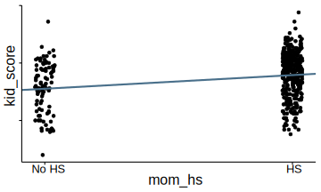
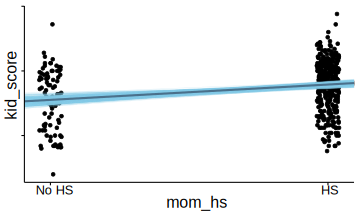
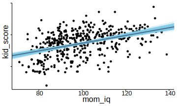
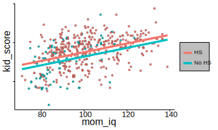
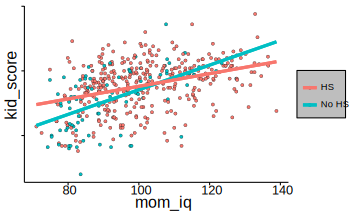
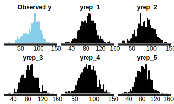
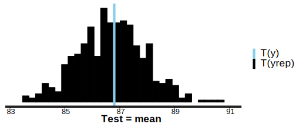
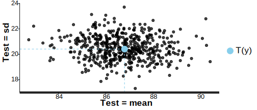
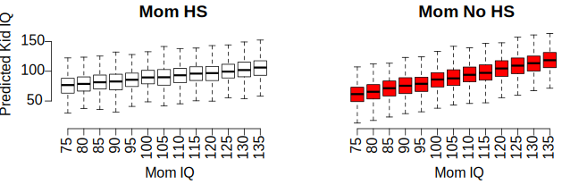

This vignette explains how to estimate linear and generalized linear models (GLMs) for continuous response variables using the stan_glm function in the rstanarm package. For GLMs for discrete outcomes see the vigettes for binary/binomial and count outcomes.
The four steps of a Bayesian analysis are
This vignette primarily focuses on Steps 1 and 2 when the likelihood is the product of conditionally independent continuous distributions. Steps 3 and 4 are covered in more depth by the vignette entitled “How to Use the rstanarm Package”, although this vignette does also give a few examples of model checking and generating predictions.
In the simplest case a GLM for a continuous outcome is simply a linear model and the likelihood for one observation is a conditionally normal PDF \[\frac{1}{\sigma \sqrt{2 \pi}} e^{-\frac{1}{2} \left(\frac{y - \mu}{\sigma}\right)^2},\] where \(\mu = \alpha + \mathbf{x}^\top \boldsymbol{\beta}\) is a linear predictor and \(\sigma\) is the standard deviation of the error in predicting the outcome, \(y\).
More generally, a linear predictor \(\eta = \alpha + \mathbf{x}^\top \boldsymbol{\beta}\) can be related to the conditional mean of the outcome via a link function \(g\) that serves as a map between the range of values on which the outcome is defined and the space on which the linear predictor is defined. For the linear model described above no transformation is needed and so the link function is taken to be the identity function. However, there are cases in which a link function is used for Gaussian models; the log link, for example, can be used to log transform the (conditional) expected value of the outcome when it is constrained to be positive.
Like the glm function, the stan_glm function uses R’s family objects. The family objects for continuous outcomes compatible with stan_glm are the gaussian, Gamma, and inverse.gaussian distributions. All of the link functions provided by these family objects are also compatible with stan_glm. For example, for a Gamma GLM, where we assume that observations are conditionally independent Gamma random variables, common link functions are the log and inverse links.
Regardless of the distribution and link function, the likelihood for the entire sample is the product of the likelihood contributions of the individual observations.
A full Bayesian analysis requires specifying prior distributions \(f(\alpha)\) and \(f(\boldsymbol{\beta})\) for the intercept and vector of regression coefficients. When using stan_glm, these distributions can be set using the prior_intercept and prior arguments. The stan_glm function supports a variety of prior distributions, which are explained in the rstanarm documentation (help(priors, package = 'rstanarm')).
As an example, suppose we have \(K\) predictors and believe — prior to seeing the data — that \(\alpha, \beta_1, \dots, \beta_K\) are as likely to be positive as they are to be negative, but are highly unlikely to be far from zero. These beliefs can be represented by normal distributions with mean zero and a small scale (standard deviation). To give \(\alpha\) and each of the \(\beta\)s this prior (with a scale of 1, say), in the call to stan_glm we would include the arguments prior_intercept = normal(0,1) and prior = normal(0,1).
If, on the other hand, we have less a priori confidence that the parameters will be close to zero then we could use a larger scale for the normal distribution and/or a distribution with heavier tails than the normal like the Student t distribution. Step 1 in the “How to Use the rstanarm Package” vignette discusses one such example.
With independent prior distributions, the joint posterior distribution for \(\alpha\) and \(\boldsymbol{\beta}\) is proportional to the product of the priors and the \(N\) likelihood contributions:
\[f\left(\boldsymbol{\beta} | \mathbf{y},\mathbf{X}\right) \propto f\left(\alpha\right) \times \prod_{k=1}^K f\left(\beta_k\right) \times \prod_{i=1}^N {f(y_i|\eta_i)},\]
where \(\mathbf{X}\) is the matrix of predictors and \(\eta\) the linear predictor. This is posterior distribution that stan_glm will draw from when using MCMC.
The stan_lm function (which has its own vignette) fits regularized linear models using a novel means of specifying priors for the regression coefficients. Here we focus using the stan_glm function, which can be used to estimate linear models with independent priors on the regression coefficients.
To illustrate the usage of stan_glm and some of the post-processing functions in the rstanarm package we’ll use a simple example from Chapter 3 of Gelman and Hill (2007):
We shall fit a series of regressions predicting cognitive test scores of three- and four-year-old children given characteristics of their mothers, using data from a survey of adult American women and their children (a subsample from the National Longitudinal Survey of Youth).
Using two predictors – a binary indicator for whether the mother has a high-school degree (mom_hs) and the mother’s score on an IQ test (mom_iq) – we will fit four contending models. The first two models will each use just one of the predictors, the third will use both, and the fourth will also include a term for the interaction of the two predictors.
For these models we’ll use the default weakly informative priors for stan_glm, which are currently set to normal(0,10) for the intercept and normal(0,5) for the other regression coefficients. For an overview of the many other available prior distributions see help("prior", package = "rstanarm").
library(rstanarm)
kid_iq <- read.csv(file.path("data", "kid_iq.csv.xz"))
post1 <- stan_glm(kid_score ~ mom_hs, data = kid_iq, family = gaussian(link = "identity"),
chains = CHAINS, cores = CORES, seed = SEED, iter = ITER)
post2 <- update(post1, formula = . ~ mom_iq)
post3 <- update(post1, formula = . ~ mom_hs + mom_iq)
(post4 <- update(post1, formula = . ~ mom_hs * mom_iq))stan_glm(formula = kid_score ~ mom_hs + mom_iq + mom_hs:mom_iq,
family = gaussian(link = "identity"), data = kid_iq, chains = CHAINS,
cores = CORES, seed = SEED, iter = ITER)
Estimates:
Median MAD_SD
(Intercept) -9.9 13.2
mom_hs 49.2 14.2
mom_iq 1.0 0.1
mom_hs:mom_iq -0.5 0.1
sigma 18.0 0.6
Sample avg. posterior predictive
distribution of y (X = xbar):
Median MAD_SD
mean_PPD 86.7 1.2 Following Gelman and Hill’s example, we make some plots overlaying the estimated regression lines on the data.
base <- ggplot(kid_iq, aes(x = mom_hs, y = kid_score)) +
geom_point(size = 1, position = position_jitter(height = 0.05, width = 0.1)) +
scale_x_continuous(breaks = c(0,1), labels = c("No HS", "HS"))
base + geom_abline(intercept = coef(post1)[1], slope = coef(post1)[2],
color = "skyblue4", size = 1)
There several ways we could add the uncertainty in our estimates to the plot. One way is to also plot the estimated regression line at each draw from the posterior distribution. To do this we can extract the posterior draws from the fitted model object using the as.matrix or as.data.frame methods:
draws <- as.data.frame(post1)
colnames(draws)[1:2] <- c("a", "b")
base +
geom_abline(data = draws, aes(intercept = a, slope = b),
color = "skyblue", size = 0.2, alpha = 0.25) +
geom_abline(intercept = coef(post1)[1], slope = coef(post1)[2],
color = "skyblue4", size = 1)
For the second model we can make the same plot but the x-axis will show the continuous predictor mom_iq:
draws <- as.data.frame(as.matrix(post2))
colnames(draws)[1:2] <- c("a", "b")
ggplot(kid_iq, aes(x = mom_iq, y = kid_score)) +
geom_point(size = 1) +
geom_abline(data = draws, aes(intercept = a, slope = b),
color = "skyblue", size = 0.2, alpha = 0.25) +
geom_abline(intercept = coef(post2)[1], slope = coef(post2)[2],
color = "skyblue4", size = 1)
For the third and fourth models, each of which uses both predictors, we can plot the continuous mom_iq on the x-axis and use color to indicate which points correspond to the different subpopulatations defined by mom_hs. We also now plot two regression lines, one for each subpopulation:
reg0 <- function(x, ests) cbind(1, 0, x) %*% ests
reg1 <- function(x, ests) cbind(1, 1, x) %*% ests
args <- list(ests = coef(post3))
kid_iq$clr <- factor(kid_iq$mom_hs, labels = c("No HS", "HS"))
lgnd <- guide_legend(title = NULL)
base2 <- ggplot(kid_iq, aes(x = mom_iq, fill = relevel(clr, ref = "HS"))) +
geom_point(aes(y = kid_score), shape = 21, stroke = .2, size = 1) +
guides(color = lgnd, fill = lgnd) +
theme(legend.position = "right")
base2 +
stat_function(fun = reg0, args = args, aes(color = "No HS"), size = 1.5) +
stat_function(fun = reg1, args = args, aes(color = "HS"), size = 1.5)
reg0 <- function(x, ests) cbind(1, 0, x, 0 * x) %*% ests
reg1 <- function(x, ests) cbind(1, 1, x, 1 * x) %*% ests
args <- list(ests = coef(post4))
base2 +
stat_function(fun = reg0, args = args, aes(color = "No HS"), size = 1.5) +
stat_function(fun = reg1, args = args, aes(color = "HS"), size = 1.5)
One way we can compare the four contending models is to use an approximation to Leave-One-Out (LOO) cross-validation, which is implemented by the loo function in the loo package:
# Compare them with loo
loo1 <- loo(post1)
loo2 <- loo(post2)
loo3 <- loo(post3)
loo4 <- loo(post4)
compare(loo1, loo2, loo3, loo4) looic se_looic elpd_loo se_elpd_loo p_loo se_p_loo weights
loo4 3744.8 28.8 -1872.4 14.4 4.8 0.5 1.0
loo3 3752.9 28.6 -1876.4 14.3 4.4 0.4 0.0
loo2 3756.8 29.1 -1878.4 14.6 2.7 0.3 0.0
loo1 3830.1 27.7 -1915.0 13.9 3.3 0.3 0.0The weights column gives the estimated posterior probability that each model has the best expected out-of-sample predictive accuracy. In this case we can see that the fourth model dominates.
The posterior predictive distribution is the distribution of the outcome implied by the model after using the observed data to update our beliefs about the unknown parameters. When simulating observations from the posterior predictive distribution we use the notation \(y^{\rm rep}\) (for replicate) when we use the same observations of \(X\) that were used to estimate the model parameters. When \(X\) contains new observations we use the notation \(\tilde{y}\) to refer to the posterior predictive simulations.
Simulating data from the posterior predictive distribution using the observed predictors is useful for checking the fit of the model. Drawing from the posterior predictive distribution at interesting values of the predictors also lets us visualize how a manipulation of a predictor affects (a function of) the outcome(s).
The pp_check function generates a variety of plots comparing the observed outcome \(y\) to simulated datasets \(y^{\rm rep}\) from the posterior predictive distribution using the same observations of the predictors \(X\) as we used to fit the model. He we show a few of the possible displays. The documentation at help("pp_check", package = "rstanarm") has details on all of the pp_check options.
First we’ll look at a plot directly comparing the distributions of \(y\) and \(y^{\rm rep}\). The following call to pp_check will create a plot juxtaposing the histogram of \(y\) and histograms of five \(y^{\rm rep}\) datasets:
pp_check(post4, check = "distributions", overlay = FALSE, nreps = 5)
The idea is that if the model is a good fit to the data we should be able to generate data \(y^{\rm rep}\) from the posterior predictive distribution that looks a lot like the observed data \(y\). That is, given \(y\), the \(y^{\rm rep}\) we generate should be plausible.
Another useful plot we can make using pp_check shows the distribution of a test quantity \(T(y^{\rm rep})\) compared to \(T(y)\), the value of the quantity in the observed data. When the argument check = "test" is specified, pp_check will simulate \(S\) datasets \(y_1^{\rm rep}, \dots, y_S^{\rm rep}\), each containing \(N\) observations. Here \(S\) is the size of the posterior sample (the number of MCMC draws from the posterior distribution of the model parameters) and \(N\) is the length of \(y\). We can then check if \(T(y)\) is consistent with the distribution of \(\left(T(y_1^{\rm yep}), \dots, T(y_S^{\rm yep})\right)\). In the plot below we see that the mean of the observations is plausible when compared to the distribution of the means of the \(S\) \(y^{\rm rep}\) datasets:
pp_check(post4, check = "test", test = "mean")
We can also specify two test quantities and look at a scatterplot:
pp_check(post4, check = "test", test = c("mean", "sd"))
The posterior_predict function is used to generate replicated data \(y^{\rm rep}\) or predictions for future observations \(\tilde{y}\). Here we show how to use posterior_predict to generate predictions of the outcome kid_score for a range of different values of mom_iq and for both subpopulations defined by mom_hs.
IQ_SEQ <- seq(from = 75, to = 135, by = 5)
y_nohs <- posterior_predict(post4, newdata = data.frame(mom_hs = 0, mom_iq = IQ_SEQ))
y_hs <- posterior_predict(post4, newdata = data.frame(mom_hs = 1, mom_iq = IQ_SEQ))We now have two matrices, y_nohs and y_hs. Each matrix has 13 columns (one for each value of IQ_SEQ) and 500 rows (the size of the posterior sample). One way to show the predictors is to plot the predictions for the two groups of kids side by side:
par(mfrow = c(1:2), mar = c(5,4,2,1))
boxplot(y_hs, axes = FALSE, outline = FALSE, ylim = c(10,170),
xlab = "Mom IQ", ylab = "Predicted Kid IQ", main = "Mom HS")
axis(1, at = 1:ncol(y_hs), labels = IQ_SEQ, las = 3)
axis(2, las = 1)
boxplot(y_nohs, outline = FALSE, col = "red", axes = FALSE, ylim = c(10,170),
xlab = "Mom IQ", ylab = NULL, main = "Mom No HS")
axis(1, at = 1:ncol(y_hs), labels = IQ_SEQ, las = 3)
Gamma regression is often used when the response variable is continuous and positive, and the coefficient of variation (rather than the variance) is constant.
We’ll use one of the standard examples of Gamma regression, which is taken from McCullagh & Nelder (1989). This example is also given in the documentation for R’s glm function. The outcome of interest is the clotting time of blood (in seconds) for “normal plasma diluted to nine different percentage concentrations with prothrombin-free plasma; clotting was induced by two lots of thromboplastin” (p. 300).
The help page for R’s glm function presents the example as follows:
clotting <- data.frame(
u = c(5,10,15,20,30,40,60,80,100),
lot1 = c(118,58,42,35,27,25,21,19,18),
lot2 = c(69,35,26,21,18,16,13,12,12))
summary(glm(lot1 ~ log(u), data = clotting, family = Gamma))
summary(glm(lot2 ~ log(u), data = clotting, family = Gamma))To fit the analagous Bayesian models we can simply substitute stan_glm for glm above. However, instead of fitting separate models we can also reshape the data slightly and fit a model interacting lot with plasma concentration:
clotting2 <- with(clotting, data.frame(
log_plasma = rep(log(u), 2),
clot_time = c(lot1, lot2),
lot_id = factor(rep(c(1,2), each = length(u)))
))
fit <- stan_glm(clot_time ~ log_plasma * lot_id, data = clotting2, family = Gamma,
prior_intercept = normal(0,1), prior = normal(0,1),
chains = CHAINS, cores = CORES, seed = SEED)print(fit, digits = 3)stan_glm(formula = clot_time ~ log_plasma * lot_id, family = Gamma,
data = clotting2, chains = CHAINS, cores = CORES, seed = SEED,
prior = normal(0, 1), prior_intercept = normal(0, 1))
Estimates:
Median MAD_SD
(Intercept) -0.017 0.001
log_plasma 0.015 0.000
lot_id2 -0.007 0.002
log_plasma:lot_id2 0.008 0.001
shape 381.916 154.042
Sample avg. posterior predictive
distribution of y (X = xbar):
Median MAD_SD
mean_PPD 32.478 0.700In the output above, the estimate reported for shape is for the shape parameter of the Gamma distribution. The reciprocal of the shape parameter can be interpreted similarly to what summary.glm refers to as the dispersion parameter.
Gelman, A. and Hill, J. (2007). Data Analysis Using Regression and Multilevel/Hierarchical Models. Cambridge University Press, Cambridge, UK.
McCullagh, P. and Nelder, J. A. (1989). Generalized Linear Models. Chapman and Hall/CRC Press, New York.